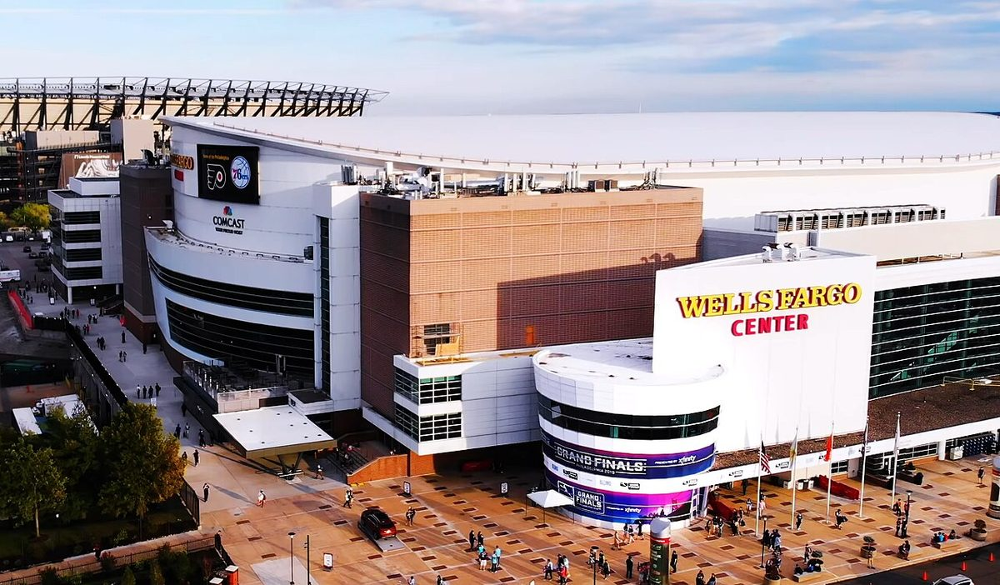

Две передачи Мичкова помогли «Филадельфии» обыграть «Баффало» 4:3, его результативная серия достигла пяти матчей
21-летний россиянин ассистировал Джейми Драйсдейлу и Кристиану Дворжаку, чья шайба в третьем периоде стала победной.

Что произошло
Российский нападающий Матвей Мичков отдал две голевые передачи, и «Филадельфия Флайерз» обыграла дома «Баффало Сэйбрз» со счётом 4:3 во вторник, 17 ноября 2026 года, продлив его результативную серию до пяти матчей, сообщило агентство AP.
Мичков ассистировал Джейми Драйсдейлу, который на 6:39 второго периода сравнял счёт — 1:1. Затем во втором периоде забил Оуэн Типпетт после паса Драйсдейла, прошедшего сквозь нескольких защитников «Баффало».

На 29-й секунде третьего периода Трэвис Санхейм после поперечной передачи Кристиана Дворжака забросил свою четвёртую шайбу в сезоне. Дворжак на 5:23 третьего периода забил победный гол — 4:3, одну из передач отдал Мичков, сообщило РИА Новости.
У «Баффало» Тейдж Томпсон забросил 13-ю шайбу в сезоне и сделал передачу, также отличились Маттиас Самуэльссон и Иржи Кулих.
Вратари
Джозеф Уолл отразил 16 бросков за «Филадельфию», Алекс Лайон — 29 за «Баффало».

Почему это важно
По данным AP, Мичков стал первым игроком «Филадельфии» со времён Симона Ганье в 2001 году, у которого до 22 лет было четыре результативные серии длиной в пять матчей. «Баффало» не может победить уже пять матчей подряд: четыре поражения в основное время и одно после него.
Что дальше
«Филадельфия» в четверг начнёт выездную серию из трёх матчей в Оттаве. «Баффало» в четверг в Вашингтоне продолжит серию из шести выездных матчей — самую длинную в сезоне.